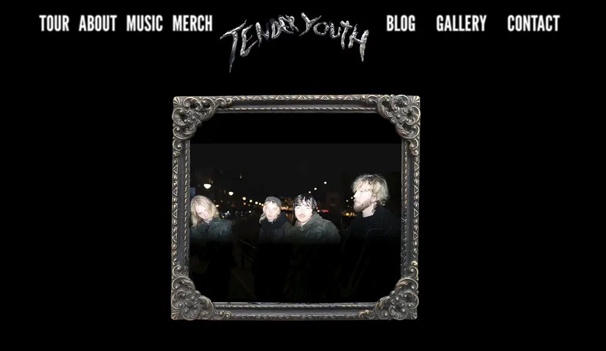
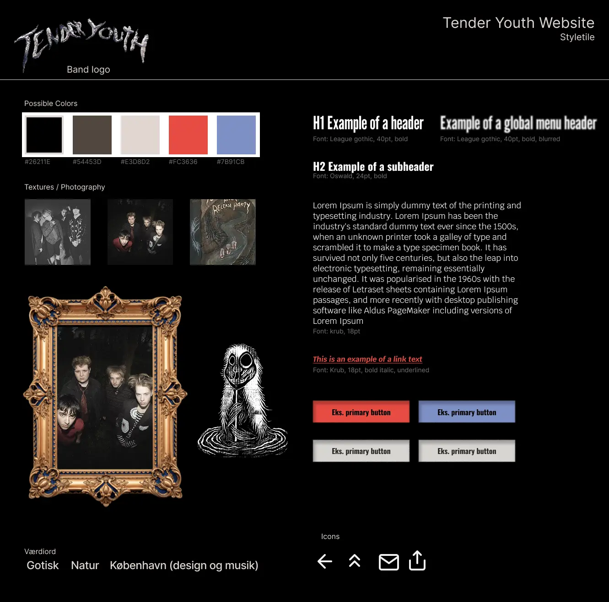
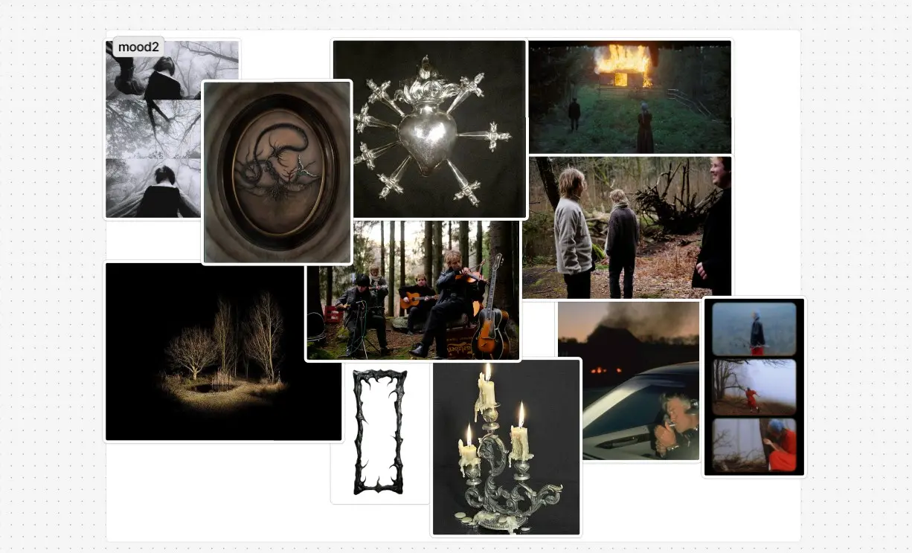
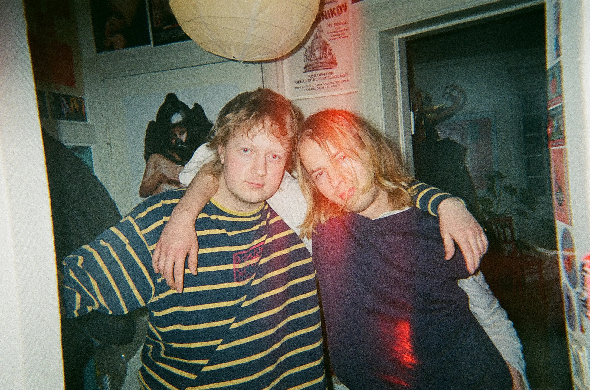

Tema 3
Grundlæggende UX/UI

Temaet
I dette tema blev vi sluppet løs til at lave vores eget store site om/for et valgfrit emne hvor vi kendte nogen fra den tilhørende målgruppe som vi kunne teste på.
Vi kom igang med UX/UI metoder og den generelle arbejdsproces der hører til et sådan projekt.


Formålet
Formålet med dette tema var at få erfaring med nogle UX/UI metoder, at kunne præsentere sin proces med design og produkt samt dets udvikling igennem research og tests.
Læring om diverse tests og research. Derudover var der det personlige formål at jeg ville lave en hjemmeside til mine gode venner før de tog på tour i london.

Proces
Jeg startede med at sætte mig ned og tænke over hvilke mennesker jeg omgiver mig med og hvillken generel målgruppe de falder under og hvad den målgruppe er intereseret i.
Jeg begyndte herefter på researcg af lignende sites og bandets æstetik som jeg kogte ned til et styletile.
Der endte jeg på mine venners band “tender youth”, både fordi de desperat mangler en hjemmeside og fordi jeg er en stor del af det miljø som er rundt om dem.
før jeg begyndte på wireframes snakkede jeg med bandet om hvilke behov de ville have for en band hjemmeside, derefter spurgte jeg nogle fra målgruppen det samme.
Jeg havde nu fundet ud af hvilke sider der skulle være på min hjemmeside og gik igang med wireframes som gik igennem en god håndfuld variationer før jeg lavede dem hi-fi og testede på dem.
Testene gav gode resultater og vigtig feedback til hvad siden manglede og hvad der fungerede godt. efter at have gennemtestet sitet begyndte jeg på kodningen af samlige 6 html dokumenter.
Løsning
Jeg endte med en stor hjemmeside på 6 kodede sider og to linkede sider i nav baren.
Bandet var tilfredse og syntes den repræsenterede dem i stil og indhold.
Siden endte med at indeholde tour datoer, info om bandet til både fans og bookere så de nemmere kunne sende den rundt til spillesteder samt et galleri og en blog.


Læring og reflektion
Dette tema var utroligt læringsrigt i forhold til kodning af et større site og den proces der hører til, med research og tests og bruger orienterede design løsninger som resultat deraf. Derudover var det også et utroligt sjovt projekt.